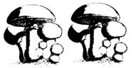
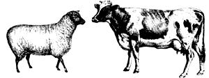

The polar bear is a nearly perfect solar converter, says electrical engineer Richard Grojean of Boston's Northeastern University. The bear's fur appears white because it reflects visible light, but in fact polar bear hairs are transparent and hollow. They trap ultraviolet radiation and conduct it, like light within an optical fiber, to the bear's skin-which is black. The energy is then absorbed and helps maintain the animal's body temperature. Unlike solar collectors that must be aimed for maximum gain, polar bear hairs trap light coming from any direction. And the animals lose very little heat; the ultraviolet energy flows only in one direction: toward the animal's skin, never away from it. Grojean believes that similar principles can be applied to designing efficient solar collectors for use in cold climates.
Much to the dismay of mycologists and wild-foods foragers, the demand among gourmets for wild mushrooms is bringing more and more full-time pickers from U.S. and foreign food companies into the fungusrich forests of the Northwest. According to a biologist with the Washington Department of Natural Resources, the annual harvest from that state alone is now no less than 1 million pounds. Although no studies have been conducted, some scientists fear that overharvesting, combined with the destructive impact of heavy foot traffic on the forest floor, may endanger some mushroom species. Also threatened are the trees that have a symbiotic relationship with mushrooms, drawing nutrients from the fungi that grow on and in their roots, trunks, and limbs.
Agricultural training programs designed to help the people of African nations learn better ways to feed themselves may be doomed . . . simply because many of the programs are training males to do work for which, by cultural tradition, females are responsible. According to the International Children's Centre, African women do the vast majority of agricultural tasks: 50% of the planting, 70 % of the hoeing and weeding, 60 % of the harvesting, 80% of the storing, 90 % of the processing, 60 % of the marketing, and half of the chores involved in managing livestock. Yet only 10 % to 20 % of the participants in agricultural training programs are women, leaving the likelihood that much of the instruction will be wasted on male students who will never use their training.
Orchards with cover crops, or even weeds, growing between trees suffer less damage from harmful insects than "clean" orchards, say researchers at the University of California's Division of Biological Control. The scientists planted bell beans, vetch, rye, clover, or mixed weeds in some test orchards and disc-cultivated others. The cover-cropped groves had fewer aphids, leafhoppers, and codling moths, and had higher and more diverse populations of predatory species. Apparently the vegetation initially draws pest insects, providing them with food and shelter-but they in turn attract predators that devour the harmful types before significant numbers infest the trees. Some cover crops-particularly long-blooming legumes-seemed to foster especially high populations of beneficial insects.
In a crash, the front seat occupants of a car equipped with an air bag have a good chance of escaping severe injury. When the wrecked car is towed to a junkyard for recycling, however, the bag itself becomes a potential killer. Such cushions contain an explosive chemical propellant, sodium azide, which is a suspected carcinogen and mutagen. Listed as dangerous under the federal Toxic Substances Control Act, sodium azide is released if an air bagequipped auto is fed into a shredder (as most junked cars now are). Recyclers say that finding a way to deal with air bags is the toughest problem they face. Currently, they claim, the propellant-and therefore the air bag in general- endangers the lives of thousands of workers in the industry and may lead to air, soil, and groundwater contamination in areas near shredding facilities.
According to the USDA, an estimated 285 million pounds of petroleum-based plastic film are produced each year for agriculture, and about half are used for mulch. But because plastic mulch isn't biodegradable, it adds nothing to the soil and must be routinely removed and disposed of at the end of the season, an expensive and time-consuming process that often creates environmental problems when the film is burned or buried. Now scientists are developing a starch-based film, made from surplus corn, that will decompose naturally after a set period: say, the length of a typical growing season. Although the film is still several years away from commercial production, USDA scientists believe it could eventually replace conventional plastic mulches made from petroleum-derived chemicals.
Cattle, not poisons or fences, may offer western sheep farmers the best way to protect their flocks from coyotes. Cows and sheep grazing on the same range normally keep their distance. But USDA researchers have found that when 45-day-old lambs and yearling heifers are penned together for 30 days, the lambs form a strong social bond with the cows and develop a need to be close to them. When turned out to graze, the two species intermingle freely . . . a fortunate arrangement for the mild-mannered sheep, because cows distrust coyotes and unfamiliar dogs, and butt and kick at the predators to keep them away. (Incidentally, cattle eat mainly grasses, while sheep prefer broadleaved plants, so the two can coexist on varied pasture nicely. The infamous and bloody range wars of the Old West-cattle ranchers against sheep farmers-were totally unnecessary.)
Researchers have found that the tail fins, or flukes, of humpback whales-an endangered species-are as different and distinctive as human fingerprints. As a result, sci entists have been able to identify more than 350 individual humpbacks. In subsequent studies, they've found that each whale has a unique personality. Using that information, the International Wildlife Coalition has come up with an appealing method for raising funds to help save the whales. For $15 or more, you can "adopt" a specific humpback and receive a photo of that whale, along with an "adoption certificate." You also get a subscription to the coalition's quarterly publication, Whalewatch, which includes updates not only on important conservation issues but also on sightings of individual whales. For additional information, a list of eminently adoptable whales, and an application form, write to Whale Adoption Project, International Wildlife Coalition, 320 Gifford St., Falmouth, MA 02540.
|
 |
 |
|